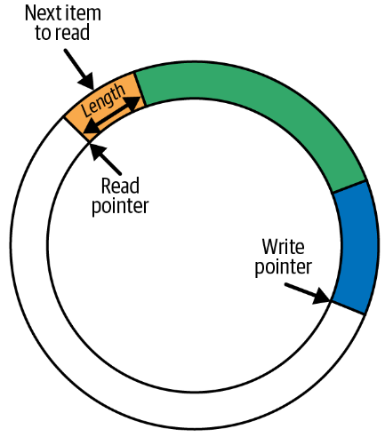

(二)eBPF的Hello World
1. 准备工作
这一章的主要内容是用eBPF写一个Hellow World程序，因此就需要开始一些简单的环境搭建工作，作为后续深入的准备。
首先为了更好的上手eBPF，我们从BCC(BPF Compiler Collection)入手，这个工具提供了eBPF的Python Binding。
安装方式可以参考仓库中给出的指南，注意，目前只推荐通过源码的方式进行安装。
2. Hello World
首先，我们知道fork会调用sys_clone这个系统调用，因此我们可以编写如下程序：
1 | |
kprobe__sys_clone表示绑定内核态函数sys_clone，每当其触发时，就执行kprobe__sys_clone的内容。其中bpf_trace_printk()打印的内核信息会出现在:/sys/kernel/debug/tracing/trace_pipe中。该文件内容的查看需要root权限。
随后我们可以在命令行执行这个python脚本(注意，我们需要root权限): sudo python3 main.py
但是存在一个问题是：有时我们知道一个用户态程序，不知道其对应的系统调用是什么，却想用kprobe绑定其在内核态函数执行的事件。eBPF提供了相应的辅助函数(helper function): get_syscall_fnname。具体用法如下:
1 | |
这一个例子中，我们又看到不一样的绑定方式，第一种方式是通过定义一个具有特别名字的用户态程序来实现对相应syscall的自动绑定，第二种方式需要我们主动调用attach函数进行绑定。
另一方面我们注意到，eBPF程序可以通过一个trace pipe输出相应信息，可以作为最基本的调试目的。但是由于只能输出纯文本，其信息丰富度有限，无法表示结构化数据。特别是当有数量较多的eBPF同时向trace pipe中输出信息，那么信息将变得混乱不堪。
3. BPF Maps
map是一个能够被eBPF程序访问的数据结构，且内核态和用户态下都能访问。map是eBPF有别于其前身的重要变化，但是eBPF maps和BPF maps都有人使用。map主要有两点用途:
- 用于在多个eBPF程序之间共享数据
- 用于eBPF(运行在内核的那部分代码)与用户态应用程序之间进行通信
而map典型的使用方式包含以下三点:
- 在用户态下编写一些配置信息，以供eBPF程序使用
- 某个eBPF程序向其中存储一些状态，然后供另一个eBPF程序使用（或者在将来供同一个eBPF读取，做一些状态恢复的工作）
- eBPF程序可以将一些结果或者指标写进
map, 提供给其他用户态应用程序来展示结果。
BPF maps的各种具体类型定义在Linux的uapi/linux/bpf.h中，并且内核文档中也包含相关的类型信息。通常里面的数据都是使用key-value的形式存储。这一章中，书中介绍了三种类型的maps：hash tables, perf and ring buffers, 和arrays。
除此以外，还有一些针对特定操作优化的map类型，譬如: first-in-first-out queues, first-in-last-out stacks, least-recently-used data storage, longest-prefix matching, 和Bloom filters(一种专门用来快速判断元素是否存在的数据集)。
而有一些map类型则具有特定的作用。譬如sockmaps和devmaps保存着关于sockets和network devices的信息，并且被网络相关的eBPF程序用于进行流量重定向(redirect traffic)。program array map存储着一系列被索引的eBPF程序，这个结构用来实现尾调用(tail calls)——一个eBPF程序调用另一个eBPF程序。甚至还有map-of-maps的类型用来实现maps信息的存储。
当一些map可能同时被多个cpu并发访问时，就涉及到竞态问题。Linux内核版本5.1之后为一些maps支持了自旋锁(spin lock)，这一点将之后再补充。
3.1 Hash Table Map
1 | |
BPF_HASH()是BCC定义的宏，用来定义一个hash table map, 具体可见: https://android.googlesource.com/platform/external/bcc/+/refs/heads/android10-c2f2-s1-release/docs/reference_guide.md#2_bpf_hashbpf_get_current_uid_gid是一个eBPF的helper function用来获取触发kprobe事件对应的进程的user ID。返回值的低32位是UID，高32位是UID，因此bpf_get_current_uid_gid() & 0xffffffff作用是将低32位的uid取出来。counter_table.lookup(&uid)是用来在hash table中查询一个键对应的值，返回值是对应value的地址。这里可能会想：&uid并非正确的C语言用法，这是因为一个eBPF源码送到compiler进行编译之前，会对源程序进行修正并重写为正确的C语言代码，随后才会送进编译器中。p=counter_table.lookup(&uid)也是同理，虽然看起来是错误的，但是编译时会自动修正。虽然为eBPF hash table map设置的键值类型是u64（默认类型），但是传参时为了高效都是以指针的形式传入——尽管传入的是函数局部变量，但是这点错误并不影响编译，反而是eBPF程序的推荐写法counter_table.update(&uid, &counter);是用来更新对应uid的计数信息。
3.1.1 在用户空间程序中访问eBPF maps数据结构：
上面我们定义了名为
counter_table的hash table map。如果想在Python代码中获取对应数据结构的内容，可以这样：
1 | |
bpf[“counter_table”]中存储的是键值对，键和值类型是一个对象(c_ulong)，如果要从中获取值只需要k.value即可转为传统的标量。要注意的是，以上面那种方式创建的hash table map并不能持久化，每次重启程序原先的状态就不存在了。并且这种map也不能在eBPF程序之间共享。
3.1.2 持久化并共享eBPF maps:
此处可参阅文档：https://github.com/iovisor/bcc/blob/master/docs/reference_guide.md#pinned-maps
BPF_TABLE_PINNED(_table_type, _key_type, _leaf_type, _name, _max_entries, "/sys/fs/bpf/xyz"): 如果对应的map存在就获取，不存在则创建一个。/sys/fs/bpf是一个特别的bpffs。注意，请务必确保bcc是通过源码编译安装的，否则无法确保是最新的~
首先我们创建一个pinned map, 以供其他eBPF程序访问：
1 | |
接着在另一个程序中编写如下内容，即可获取相应pinned map，注意这个map即使在第一个程序退出之后仍然存在，且始终可以被任意eBPF访问到。
1 | |
3.2 Perf and Ring Buffer Maps
上面的例子中使用hash table map来在内核和用户态空间中交换数据，但是Linux内核支持使用perf buffers和其变种BPF ring buffers来完成这个数据交换的过程。注意，
BPF ring buffers在Linux kernel 5.8之后才支持，但是相比BPF perf buffers更受欢迎。关于如何使用BPF ring buffers来进行数据交换，将在后面章节详细给出例子。
3.2.1 Ring Buffer
Ring Buffer的机制其实细节还是非常多的，由于关注的是eBPF这里只能给出最粗略和感性的认知。
在eBPF中，Ring Buffer的概念并没有什么特别的。Ring Buffer就是一小块内存，逻辑上以"环(ring)"进行组织，包含两个指针: 写指针和读指针。
当进行数据写入时，无论当前写指针指向的内容是什么，会直接写入指定长度（长度信息包含在数据对象的header中）的数据，写指针会偏移到写入数据结尾的下一个位置，等待下一次写入。
当进行数据读取时，也是直接从当前读指针处获取指定长度的数据，然后将读指针偏移指定长度（方向和写指针一致）
注意：
- 当读指针和写指针重叠时，意味着"没有"数据需要去读了。
- 如果一个写操作，可能使写指针超过读指针(意味着写指针写满一"圈"数据了至少), 那么该写操作将被抛弃并且
drop counter会自增1.drop counter用来记录自上一次成功读取数据后，是否有数据丢失。(注意：当发生数据覆盖时究竟是抛弃要写入的数据还是允许覆盖，这并不是一概而论的，有的场景中就比较宽松。) - 如果读操作和写操作的速率始终保持一致，那么就能使用ring buffer读取相当长的数据(并不存在数据丢失问题，写多少读多少)

3.2.2 定义Perf Buffer:
第一个程序将用来对Perf Buffer进行写入：
1 | |
注意，Perf Buffer也不是共享和持久的。如果要持久也得用pinned map。这里hello函数的参数是kprobes或者kretprobes提供的，并且还可以调用一些helper function，但能够使用哪些上下文信息和能够调用哪些helper function取决于程序的类型和触发程序的事件是什么，在《Learning eBPF》的第七章，对这些进行了介绍。
3.3 Function Calls
原本在eBPF程序中只能调用helper function，如果想要调用其他函数就必须将自定义函数声明为内联:
1 | |
内联函数和普通函数在汇编上的区别就是没有额外的跳跃指令，内联函数的函数体会在被调用的地方被原地扩展。但是从Linux内核版本4.16和LLVM 6.0之后，eBPF中只能使用内联函数的约束就被废除了。但是BCC仍然不支持“BPF subprograms”，仅支持内联函数。
3.4 Tail Calls
ebpf.io中描述了:
tail calls can call and execute another eBPF program and replace the execution context, similar to how the execve() system call operates for regular process.简单来说，当tail call完成时，不会返回到调用者的上下文环境中。
Tail call并非eBPF编程中所独有的。tail call的通用目的是为了避免当函数递归调用时，栈帧无限地增加(这会导致栈溢出)。具体而言，可以重新编排函数代码，使得递归调用函数后，没有任何其他需要干的内容——即递归调用就是函数体的最后一行代码。这样，
tail call允许一系列的函数调用不会增长栈的大小。毕竟，当递归调用时，上一个栈帧的函数体不再被需要了，可以被优化掉。在eBPF中，栈帧大小仅有512B。
Tail call通过helper function: bpf_tail_call()来使用，其函数签名如下:
1 | |
参数含义如下:
ctx用来将当前eBPF程序的上下文传递给被调用的eBPF程序prog_array_map是一个eBPF map，类型为BPF_MAP_TYPE_PROG_ARRAY，包含了一系列的文件描述符，每个文件描述符都表示一个eBPF程序。index表示prog_array_map中哪个eBPF程序应该被调用。
这里存在两种情况：
- 如果
bpf_tail_call执行成功，对应的eBPF程序将会执行并替换当前栈帧(当前eBPF的函数体就不再被执行了) - 如果
bpf_tail_call执行失败，当前eBPF程序的函数体会继续执行
下面是一个例子:
sys_entertracepoint和kprobe都是一个触点，每当一个系统调用被执行完时，sys_enter这个tracepoint就会被触发。只需要将一个函数绑定到tracepoint上，每次tracepoint被触发时，该函数会被执行。
1 | |
有几点注意事项:
b.load_func("ignore_opcode", BPF.RAW_TRACEPOINT)中，load_func的第一个参数需要是一个eBPF program；第二个参数可以是BPF.RAW_TRACEPOINT、BPF.KPROBE等其他值，具体是什么，要看tail call的"父亲"是什么，如果ebpf程序绑定的是一个tracepoint，那么就需要指定为BPF.RAW_TRACEPOINT，如果ebpf程序绑定的是一个kprobe，就需要指定为BPF.KPROBE.- 上面
hello和ignore_opcode的参数都定义为void* ctx，但由于其父亲的上下文来自tracepoint，因此具体的指针类型也是可知的，完全可以声明为:struct bpf_raw_tracepoint *ctx. 如果在kprobe/uprobe下，其参数类型就应该是struct pt_regs *ctx.
pt_regsis at the high end of kernel stack, is mainly used for saving user registers in user-kernel mode switching.